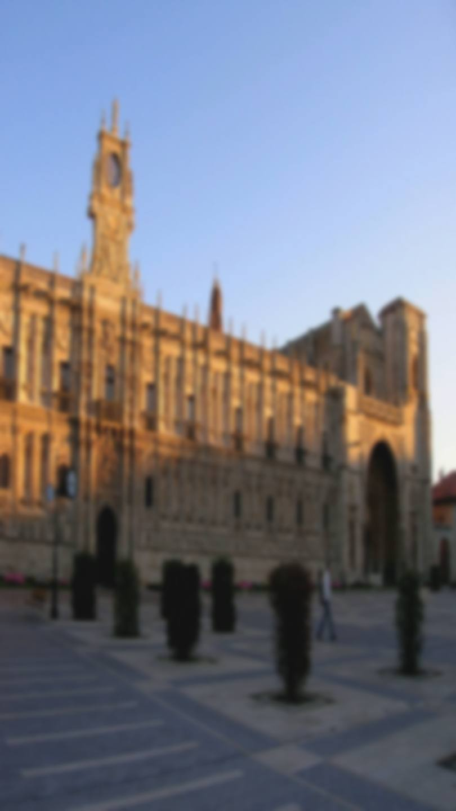

Liga Cazurra · Equilibrio
Lleva la base hacia donde se inclina, sin pasarte. El viento sopla a rachas y cada vez más. Si se cae, se pierde un rato en levantarlo.
Se acabó el tiempo
0PUNTOS
Pon el móvil de pie